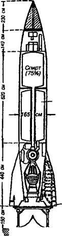
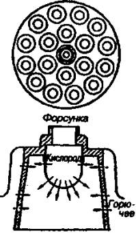
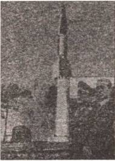
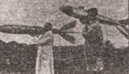
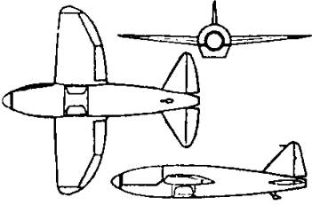
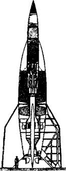
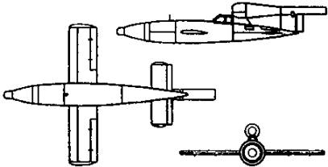

Ракетный рейх
На заключительном этапе Второй мировой войны и после ее окончания наши конструкторы получили возможность познакомиться с последними достижениями своих противников. То, что они увидели и узнали, в некоторых случаях их попросту ошеломило. Оказалось, что за 30-40-е годы немцы во многих областях ракетостроения, создания реактивных самолетов ушли далеко вперед.
ИГРА ПОШЛА ВСЕРЬЕЗ. В тот момент, когда по велению новой власти был закрыт «Ракетенфлюгплатц», у немецких ракетчиков появился свой ангел-спаситель по фамилии Дорнбергер. Побывав однажды на запусках ракет, он понял, что они при соответствующей доработке могут стать прекрасным оружием.
Дорнбергер добился, чтобы в начале 30-х годов на артиллерийском полигоне в Куммерсдорфе была создана новая испытательная станция — «Куммерсдорф-Запад». Ее начальником был назначен сам Дорнбергер, получивший к тому времени звание полковника.
Первым штатским служащим станции стал Вернер фон Браун, вторым — способный и талантливый механик Генрих Грюнов. В ноябре 1932 года к ним присоединился и специалист по ракетным двигателям Вальтер Рид ель.
Они-то и продолжили работы, начатые на «Ракетенфлюгплатце». На станции «Куммерсдорф-Запад» был опробован испытательный стенд, на котором в декабре 1932 года и был установлен очередной ракетный двигатель.
Первый блин, как водится, вышел комом — двигатель тут же взорвался. И потом еще целый год ракетчиков преследовали неудачи, изредка перемежаемые днями удачных пусков.
Однако к 1933 году разработчики набили себе шишек столько, что пришли к заключению: они готовы приступить к созданию полноразмерной ракеты. Условно она была названа «Агрегат-1» («Agregat-?»), или А-1.
Согласно проекту, стартовый вес ракеты А-1 составлял 150 кг. Соответственно этому был разработан и двигатель. В процессе его доводки тяга его возросла до 1000 кг.
Понятное дело, для такого двигателя была нужна и новая ракета с более вместительными баками. А для ее испытания понадобился и новый полигон, поскольку на старом «подросшие» ракеты испытывать было уже опасно для окружающих.
В декабре 1934 года две новые ракеты типа А-2 и их создатели переехали на новый полигон, размещавшийся на острове Боркум в Северном море. Обе ракеты поднялись на высоту 2000 м.
Следующая ракета была названа А-3. Однако к тому времени выяснилось, что погода в Северном море далеко не часто бывает благоприятна для запусков ракет, и полигон снова пришлось переносить. Теперь он разместился на остров Узедом в Балтийском море, неподалеку от устья реки Пене.
К этому времени уже был спроектирован, построен, испытан и окончательно доработан новый двигатель с тягой в 1500 кг. Так что когда в марте 1936 года работу ракетчиков приехал проверить представитель Генштаба вермахта генерал Фрич, было, что ему показать. Он остался доволен увиденным, и разработчики получили новые ассигнования.
А в апреле 1936 года состоялось совещание, результатом которого явилось решение создать новую испытательную станцию в районе местечка Пенемюнде. Фактически там было создано даже две испытательные станции. Представители сухопутных войск получили в свое распоряжение лесистую часть восточнее озера Кельпин — ее назвали «Пенемюнде-Восток». Представители ВВС облюбовали себе пологий участок местности к северу от озера, где можно было построить аэродром, эта часть получила название «Пенемюнде-Запад».
Одновременно со строительством исследовательского центра в Пенемюнде близилась к завершению и работа над ракетой А-3. Она имела высоту 6,5 м и диаметр 70 см. Стартовый вес ракеты составлял 750 кг, а ее двигатель развивал тягу 1500 кг, работая на жидком кислороде и спирте.
Испытательные запуски А-3 были проведены осенью 1937 года. Хотя все три ракеты благополучно одолели запланированную дистанцию, в цель ни одна из них не попала. Расследование показало, что ни система наведения, ни газовые рули не оправдали возлагавшихся на них надежд. Пришлось их дорабатывать.
Тем не менее Вернер фон Браун и Вальтер Ридель не собирались останавливаться на достигнутом. Они начали создавать гораздо большую ракету А-4 с дальностью полета в 260 км и скоростью порядка 1600 м/с. Весить эта громадина при полной заправке должна была уже 12 т, что требовало двигателя с тягой как минимум в 25 т. Боевой заряд такой ракеты превосходил по мощности большую авиабомбу.
Пока для этой ракеты разрабатывался новый двигатель достаточной мощности, были начаты испытания модифицированной ракеты А-3 с усовершенствованной системой управления. Она получила обозначение А-5. Первая ракета этой серии была запущена осенью 1938 года, но только через год, когда уже шла война с Польшей, ее удалось довести до полной кондиции.
Ракеты показали себя настолько надежными, что некоторые удавалось запускать даже по несколько раз, приводя их в порядок после спуска на парашюте и новой заправки.
Успех этой программы открыл дорогу в небо «Большой ракете» — той самой А-4, которую позднее стали именовать ракетой Фау-2 — оружием возмездия.
ПРОГРАММА ФАУ. Первые образцы А-4 были готовы к лету 1942 года. В Европе уже вовсю бушевала Вторая мировая война, и Гитлер надеялся, что новое оружие внесет свой вклад в быстрый и окончательный разгром всех его врагов. Ведь носовая часть ракеты имела боевую головку с зарядом весом около 1 т.
Запуск А-4 производился со стартового стола, который представлял собой массивное стальное кольцо, укрепленное на четырех стойках. На стоявшей вертикально ракете сначала срабатывало пиротехническое устройство запуска, зажигавшее смесь спирта и кислорода, самотеком поступавших в камеру сгорания. Это была предварительная ступень пуска, обеспечивавшая тягу в 7 т.
Если двигатель функционировал без перебоев, тут же включался парогазогенератор и начинал работать турбонасос, который за 3 секунды резко увеличивал давление в баках. Соответственно, возрастало истечение спирта и кислорода, тяга возрастала до 27 т, и ракета стартовала.
Через 25 секунд она преодолевала звуковой барьер, а на 54-й секунде А-4 ложилась на боевой курс.
Впрочем, первые пуски А-4, начавшиеся в июне 1942 года, показали, что ракета еще «сырая». Она то и дело сходила с курса и падала в море.
Но после соответствующей доработки систем управления в одном из пусков дальность полета ракеты составила 190 км. Это был несомненный успех, по достоинству оцененный членами комиссии по оружию дальнего действия, посетившей Пенемюнде 26 мая 1943 года.

Схема ракеты Фау-2 (она же — А-4).
Параллельно с программой А-4, начиная с 1942 года, на станции «Пенемюнде-Запад» велась разработка еще одной системы оружия дальнего действия под названием Fi-103 («Fieseler»). Позднее стараниями Министерства пропаганды Геббельса это оружие получило название: самолет-снаряд Фау-1 (V-1 от немецкого слова «Vergeltungswaffen» — «Оружие возмездия»).
Самолет-снаряд конструкции немецкого инженера Ф. Госслау был своеобразной воздушной торпедой. После пуска он удерживался с помощью автопилота на заданном курсе и определенной высоте. По истечении определенного срока срабатывал таймер, система управления отключалась — и самолет-бомба падал вниз, неся на борту 1000 кг взрывчатки.
Длина Фау-1 составляла 7,3 м. В полете самолет-снаряд поддерживали крылья размахом в 5,4 м. А в движение он приводился пульсирующим воздушно-реактивным двигателем, установленным в задней части фюзеляжа.
Такие двигатели As014, производившиеся фирмой «Аргус», представляли собой стальные трубы, открытые с задней части и закрытые спереди пластинчатыми пружинными клапанами, открывавшимися под давлением встречного потока воздуха. Когда воздух, открыв клапаны решетки, входил в трубу, здесь создавалось повышенное давление. Одновременно сюда же впрыскивалось топливо; происходила вспышка, в результате которой расширившиеся газы действовали на клапаны, закрывая их, и создавали импульс тяги, выбрасываясь назад через реактивное сопло. После этого в камере сгорания снова создавалось пониженное давление и забортный воздух опять открывал клапаны; начинался новый цикл работы двигателя.
Поскольку пульсирующий воздушно-реактивный двигатель обязательно требует предварительного разгона до скорости минимум 240 км/ч, пуск Фау-1 с земли осуществлялся специальной катапультой.
Таким образом, членам прибывшей на Пенемюнде Комиссии по оружию дальнего действия предстояло сделать выбор в пользу того или иного оружия — Fi-103 и А-4.
Для этого перед ними были продемонстрированы обе системы в действии. Две ракеты А-4 успешно стартовали и пролетели 260 км. Один самолет-снаряд Fi-103 взлетел, но разбился почти сразу же после взлета. Второй даже не смог стартовать.
И все же комиссия решила рекомендовать в серийное производство обе системы, мотивировав это тем, что самолет-снаряд проще в обслуживании при запуске, чем А-4. В условиях войны это немаловажный фактор.
О результатах инспекции было доложено Гитлеру. Ему показали фильм об испытаниях, а также модели ракеты и средств ее транспортировки — специального прицепа «видальвагена» и самоходного лафета «мейлервагена». Фюрер остался доволен увиденным, но потребовал от конструкторов увеличить вес боевой части и ракеты и самолета-снаряда до 10 т.

Схема расположения форсунок в ракете Фау-2.
Однако дальнейшему совершенствованию оружия дальнего действия помешали союзники. В ночь на 18 августа 1943 года они нанесли сокрушительный удар по Пенемюнде. Свыше 300 тяжелых бомбардировщиков сбросили более 1500 т фугасных и огромное количество зажигательных бомб на испытательные стенды, производственные цеха и прочие сооружения. Начисто были выведены из строя электростанция и завод по производству жидкого кислорода, погибли 735 сотрудников полигона. Среди них оказались главный инженер полигона и главный разработчик двигателей.
Темпы производства и модернизации ракет были резко снижены. Многое пришлось восстанавливать заново.
А потому лишь через год, в июне 1944 года в Лондоне было получено донесение о том, что на французское побережье Ла-Манша доставлены немецкие управляемые снаряды. Английские летчики сообщали, что вокруг двух пусковых установок замечена большая активность противника.
И под утро 13 июня над наблюдательным пунктом в Кенте был замечен странный самолет, издававший резкий свистящий звук и испускавший яркий свет из хвостовой части. Через 18 минут самолет-снаряд грохнулся на землю в Суонскоуме, образовав в результате взрыва огромную воронку. В течение последующего часа еще три таких же самолета-снаряда упали в Какфилде, Бетнал-Грине и в Плэтте. Правда, потери в результате этих взрывов оказались сравнительно невелики — в Бетнал-Грине были убиты 6 и ранены 9 человек. Но был разрушен железнодорожный мост и население изрядно напугано применением невиданного оружия.
Так начался «Роботблиц» — война механизмов.

Вернер фон Браун следит за испытаниями ракеты Фау-2.

«Ракетный барон» и сам не чурался таскать ракеты на полигоне.
АТАКА РОБОТОВ. Всего в ходе этой войны на Англию было выпущено свыше 8000 самолетов-снарядов Фау-1. Однако из этого количества лишь около 2500 достигли района целей. Остальные были уничтожены истребителями английской ПВО или зенитной артиллерией, разбились об аэростаты заграждения или просто не долетели до цели из-за технических отказов.
Тем не менее даже этого оказалось достаточно, чтобы уничтожить на территории Англии 24 491 жилое здание, еще 52 293 постройки сделать не пригодными для жилья. При бомбардировках погибли также 5864 человека, а 17 197 были тяжело ранены.
В сентябре 1944 года вступили в войну и ракеты Фау-2. Причем первые две были выпущены не по Лондону, а по Парижу. Одна из них не долетела до цели, но другая разорвалась в городе. Проверив таким образом боевую эффективность нового оружия, немцы перенесли огонь на Лондон.
Начиная с 8 сентября 1944 года, немцы эпизодически атаковали Лондон и другие районы Великобритании. «Ракетное наступление» немцев на Англию закончилось лишь 27 марта 1945 года в 16 часов 45 минут, когда ракета с № 1115 упала в районе Орпингтона, в графстве Кент.
Всего за семь месяцев немцы выпустили в направлении Лондона по меньшей мере 1300 и по Нориджу около 40 ракет Фау-2. Из них около 500 упало в пределах лондонского района обороны, но ни одна не взорвалась в черте Нориджа. В Лондоне от ракет погибли 2511 человек, а 5869 человек были тяжело ранены. В других районах потери составили 213 человек убитыми и 598 тяжело раненными [1].
РАКЕТА «РЕЙНБОТЕ». Помимо самолета-снаряда Фау-1 и баллистической ракеты Фау-2, в «Роботблице» была использована первая серийная многоступенчатая ракета «Рейнботе», разработанная фирмой «Рейнметалл-Борзиг». Она имела длину свыше 11 м и, по существу, состояла из трех ракет, последовательно состыкованных друг с другом. В качестве пусковой направляющей использовалась стрела «Мейлервагена».
Ускоритель и все три ступени работали на твердом топливе — дигликольдинитрате. Когда двигатель нижней ступени прекращал работать, воспламенялась специальная смесь пороха и нитроглицерина, которая воспламеняла твердое топливо следующей ступени, которая в этот момент своими газами отбрасывала предыдущую ступень в сторону.
Максимальная дальность действия ракеты «Рейнботе» оставалась сравнительно небольшой — всего 220 км, она несла сравнительно небольшой боевой заряд — всего 40 кг. Однако эти ракеты были просты в обслуживании, могли транспортироваться прямо к линии фронта.
Впрочем, ни ракеты «Рейнботе», ни Фау-1, ни Фау-2 массовой паники, как на то надеялись Гитлер и его приближенные, среди населения Англии и других стран не вызвали.
«КОСМИЧЕСКАЯ» ПУШКА. Не поправил положения и проект Фау-3, предусматривавший строительство сверхдальнобойной «космической» пушки конструкции барона Гвидо фон Пирке. Он предложил построить орудие с боковыми наклонными камерами, внутри которых размещаются заряды, при подрыве придающие снаряду дополнительные импульс и ускорение.
Согласно архивным данным, орудие, проходившее по документам нацистов под обозначением «Hochdruckpumpe», или V-3, должно было иметь калибр 150 мм и расчетную дальность стрельбы 165 км. Ствол общей длиной 140 м перевозился по частям и монтировался на бетонном основании стационарной огневой позиции. Снаряд имел длину 2,5 м, весил 140 кг и по форме напоминал ракету.
Прототип орудия калибром 20 мм был изготовлен в апреле 1943 года и уже в мае с успехом демонстрировался на одном из испытательных полигонов в Польше. И хотя говорить о точности стрельбы здесь не приходилось, фюрер и его приближенные полагали, что Фау-3 вкупе с предыдущими образцами «оружия возмездия» можно использовать в качестве инструмента террора.
Был дан приказ срочно изготовить 50 таких орудий, которые предполагалось разместить прежде всего на побережье Франции, близ Кале. Строительство первой пушки Фау-3 началось в сентябре 1942 года и близилось к завершению. Однако при налете авиации союзников 6 июля 1944 года несколько бомб попало в шахту ствола, и конструкция была разрушена.
А к концу августа перед лицом наступления союзников нацисты вынуждены были окончательно отказаться от планов обстрела Англии из сверхдальнобойных пушек. А недостроенный комплекс на побережье Франции был взорван британцами 9 мая 1945 года.
ПИЛОТИРУЕМЫЕ ФАУ. Третий рейх трещал уже по всем швам. Но, как известно, утопающий хватается и за соломинку. Разработчики Фау-1, понимая, что самолет-снаряд в его изначальном виде способен попасть лишь в очень крупную цель, например, город, предложили для лучшего наведения использовать пилотируемую модификацию Fi-103.
Говорят, одним из первых эту идею поддержал «диверсант № 1» Третьего рейха Отто Скорцени, который тут же объявил набор в «отряд военных космонавтов». К марту 1944 года в отряде уже числились 80 пилотов, которые должны были пройти подготовку и осуществить полет на модифицированном Fi-103.
Причем в отличие от японцев, использовавших для пилотирования самолетов-бомб летчиков-камикадзе, немцы решили применить более гуманный вариант. Fi-103 с пилотом в кабине подвешивался к бомбардировщику Не-111. Тот взлетал, набирал высоту и выходил на исходный рубеж. Здесь самолет-снаряд отцеплялся. Пилот включал собственный двигатель, направлял аппарат к Ла-Маншу и ввиду английских берегов выпрыгивал с парашютом, предварительно нацелив свой аппарат на какой-либо объект побережья. По идее, приводнившегося пилота должны были подбирать подлодки, специально барражировавшие в заданном районе.
Конечно, риск невозвращения пилота с такого боевого задания был весьма велик, однако война есть война…
В кратчайшие сроки были построены четыре различных пилотируемых самолета-снаряда Fi-103, получившие название «Рейхенберг». Один предназначался для аэродинамических испытаний, другой — двухместный — для тренировок пилота с инструктором, третий — учебный одноместный, оборудованный двигателем и посадочной лыжей, и, наконец, четвертый оснащался боевым зарядом, но шасси за ненадобностью не имел.

Схема ракетного самолета Не-176 со сбрасываемой кабиной.
Вскоре начались и летные испытания бездвигательных модификаций «Рейхенберг I» и «Рейхенберг II». Выглядело это так. Бомбардировщик поднимал самолет-снаряд на высоту в 300–400 м, затем пилот отсоединял свой аппарат от носителя и заходил на посадку.
Однако при первых же полетах начались многочисленные ЧП: пилоты не успевали сориентироваться в полете, промахивались мимо посадочной полосы и шли на вынужденную посадку за пределами аэродрома. Что, естественно, кончалось печально как для аппаратов, так и для самих пилотов.

Ракета А-9/А-10, которая, по идее, должна была долететь до Нью-Йорка.
Программа оказалась под угрозой закрытия еще до начала практической реализации. И тогда на выручку пришла личный пилот Гитлера, знаменитая летчица Ханна Рейч, уже поднимавшая в небо экспериментальные машины с реактивными двигателями. На «Рейхенберге III» ей удалось выполнить десять успешных испытательных полетов.
Однако до боевого применения пилотируемых самолетов-снарядов дело так и не дошло. Третий рейх капитулировал быстрее, чем была закончена программа испытаний.
АТАКА НА НЬЮ-ЙОРК? Еще более интересна и загадочна судьба проекта А-9/А-10, проходившего, как говорят, при непосредственном участии Вернера фон Брауна.
Продолжая программу совершенствования своих ракет, он в конце войны разработал проект двухступенчатой ракеты, состоявшей из ракеты А-9 (верхняя ступень) и ракеты-носителя А-10 со стартовым весом около 75 т и суммарной тягой двигателей в 180 т. Общая длина комплекса составляла 29 м, максимально достижимая высота полета — 180 км, а дальность — 4800 км. То есть, говоря попросту, теоретически ракета мота долететь до США и обрушить свой боевой заряд, например, на Нью-Йорк.
Правда, история системы А-9/А-10 до сих пор вызывает горячие споры. Одни утверждают, что было изготовлено только два или три макетных образца ракеты А-9, а ускоритель А-10 так и остался на бумаге. Другие же говорят о том, что межконтинентальная ракета была доведена до «железа» и было построено несколько экспериментальных образцов.
А коли так, получается, гитлеровцы теоретически могли атаковать Нью-Йорк. Почему же тогда они этого не сделали? Полагают, что их подвела точность наведения. Фюрер предполагал обставить бомбардировку Нью-Йорка с некоторой театральностью. Сначала, дескать, немецкое радио объявит всему миру, что в такой-то день и час крупнейший город США будет атакован. А потом, точно в назначенный срок, ракета грохнется прямо на верхушку небоскреба «Эмпайр Билдинг», самого высокого здания в мире на тот период.
В городе — паника, в стране — шок… Правительство США заключает сепаратный мир с Германией, выходя, таким образом, из войны. Лишившись столь могущественного союзника, англичане и русские уже не смогут столь же успешно продолжать наступление…
План бомбардировки США получил кодовое название «Эльстер». Однако, когда специалисты стали рассматривать его детально, выяснилось, что навигационные средства того времени не давали возможности точно нацелить самолет-снаряд именно на «Эмпайр Билдинг». Это и для современных баллистических ракет достаточно сложная задача. А в то время специалисты по наведению давали гарантию попадания лишь в круг диаметром не менее 8 км.
Такая точность Гитлера не устраивала. При этом пропадал весь пропагандистский эффект данной операции. Тогда и было решено использовать опыт Ханны Рейч по пилотированию самолета-снаряда. А чтобы наведение оказалось более точным, на верхушке небоскреба специальные агенты должны были установить радиомаяк.

Схема пилотируемого варианта самолета-снаряда Fi-103.
И вот глухой ночью 30 ноября 1944 года за борт всплывшей у американских берегов немецкой субмарины была спущена резиновая шлюпка, в которую уселись два специально подготовленных агента — Джек Миллер и Уильям Колпа.
Они должны были высадиться и, пользуясь тщательно заготовленной легендой, хорошими документами и большой суммой денег, внедриться в обслуживающий персонал «Эмпайр Билдинг». В назначенный срок именно они должны были установить и включить на крыше небоскреба радиомаяк…
Однако хотя агенты и добрались до Нью-Йорка, но прогорели при попытке внедриться в персонал небоскреба. Одному из служащих показалось подозрительным рвение новоявленных кандидатов, и он сообщил о них в ФБР. В Германии же довольно долгое время о провале агентов не ведали, поскольку ФБР затеяло с Третьим рейхом радиоигру, показывавшую, что операция развивается по плану.
Однако спешно подготовленный к старту комплекс А9/А10 взорвался на старте. А на подготовку новой ракеты времени не оставалось — фронт неумолимо приближался к Берлину, а космодром Пенемюнде подвергался непрестанным бомбардировкам…
КОСМОНАВТЫ ТРЕТЬЕГО РЕЙХА. Так гласит одна версия этой истории. Но существует и другая. Согласно ей, получается, что 24 января 1945 года состоялся второй запуск комплекса А9/А10. На сей раз он вроде бы прошел удачно. Однако то ли пилот Рудольф Шредер не смог как следует нацелить самолет-снаряд, то ли по какой-то технической причине тот не долетел до Нью-Йорка и рухнул в море.
Сам Шредер тем не менее, говорят, уцелел и действительно был подобран подводной лодкой. После войны волею судеб он оказался на территории ГДР. И когда в 1961 году в космос полетел первый человек, не выдержал и сделал публичное заявление. Дескать, он, Шредер, побывал в космосе еще в 1945 году. Однако вместо того, чтобы восхититься героем, его тут же «подхватили под белы ручки» и упекли в психушку, где он и сгинул…
Согласно третьей версии, немцы произвели около 48 пусков системы А-9/А-10, причем в 1944 году на старте и в полете взорвалось 16 образцов. Но некоторые из стартов прошли удачно. И одна из ракет даже вышла на орбиту, где трое космонавтов пробыли в анабиозе 45 лет и приземлились, точнее, приводнились в Атлантику лишь 1 апреля 1991 года и были выловлены катером американской береговой охраны.
Эта история в разных вариациях обошла страницы многих изданий. И лишь немногие обратили внимание, что опубликована она была аккурат накануне Дня дураков.
На самом же деле полигон Пенемюнде был занят 5 мая 1945 года войсками советского 2-го Белорусского фронта под командованием маршала Рокоссовского. Причем подразделения майора Анатолия Вавилова получили специальный приказ о максимальной сохранности оставшегося на полигоне оборудования.
Правда, сами немецкие конструкторы и проектировщики эвакуировались в Баварию еще до прихода русских и провели там несколько тревожных недель, пока младший брат Вернера фон Брауна Магнус не нашел представителей американского командования, которым ракетчики тотчас и сдались.
Сами американские войска в это время захватили подземный ракетный завод, расположенный близ Нидерзаксверфена, на территории, которая по соглашению должна была стать русской зоной оккупации. Однако к тому времени, когда союзные офицеры приступили к исполнению необходимых формальностей передачи завода русским, около 300 товарных вагонов, груженных оборудованием и деталями ракет Фау-2, уже находились на пути в Западное полушарие.
Так началась охота за трофеями, подробнее о которой мы поговорим в следующей главе.